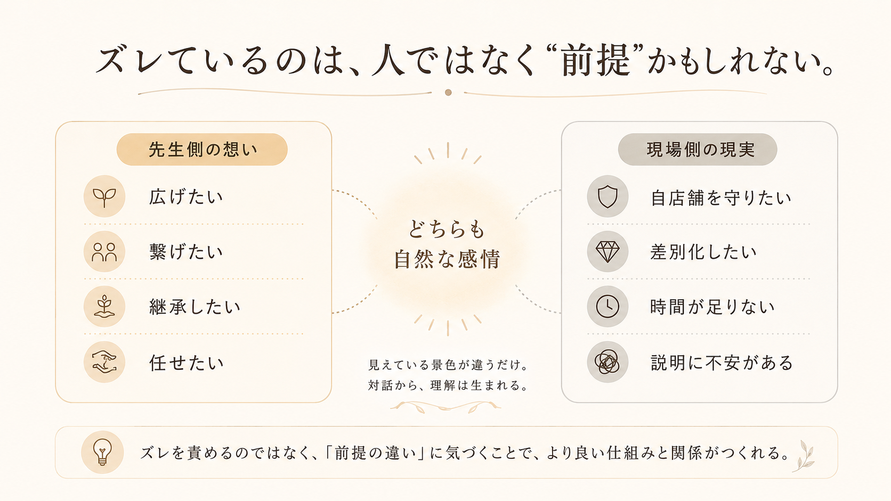
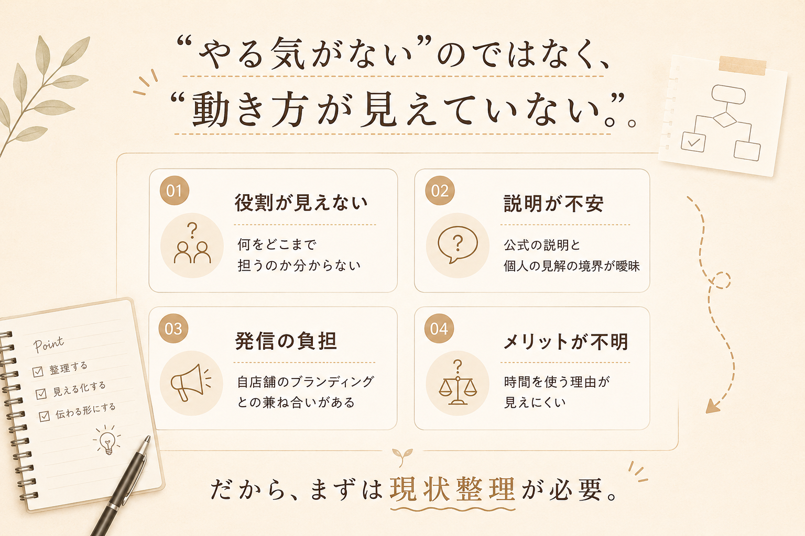
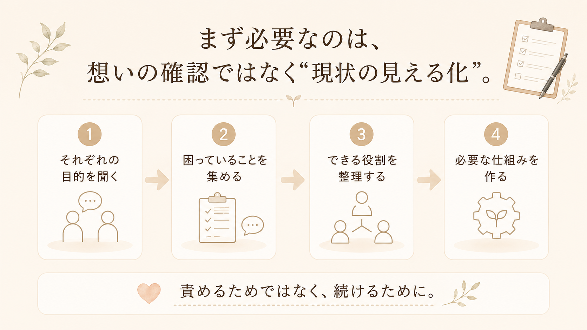
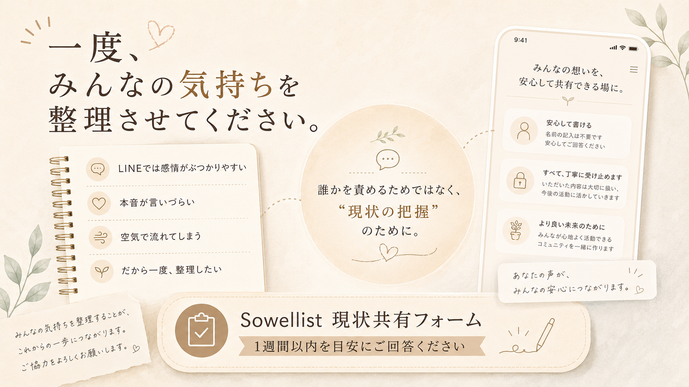

Sowellist note
Sowell®︎について、現場側から感じていること
先生の書いていることは理解できますし、共感する部分もあります。
ただ、私がSowell®︎に関わり始めてから感じているのは、先生の想いと、実際にSowellistとして関わっている人たちの現実との間に、少し大きなズレがあるということです。
これは、どちらが正しい・間違っているという話ではありません。
立場や目的の違いによって、自然に生まれているズレだと思っています。
だからこそ、一度そこを整理して共有したいと思います。

Sowellistになった理由は、人によって違う
Sowellistになった人すべてが、最初からSowell®︎を広めたいと思って参加しているわけではないと思います。
もちろん、Sowell®︎そのものに魅力を感じている人は多いと思います。
ただ実際には、サロンの差別化をしたい、他店と違う武器が欲しい、施術の負担を減らしたい、お客様への提案の幅を増やしたい、という現実的な理由で導入している人も多いはずです。
これは悪いことではありません。
個人サロンという業態では、自分のサロンを守ることも大切な仕事です。

やる気がないのではなく、動き方が見えていない
今起きていることは、やる気がないという話ではなく、どう動けばいいのかが見えていない状態に近いと思っています。
たとえば、説明方法が分からない。
公式の説明と個人の見解の境界が曖昧。
SNS発信をしたくても、自店舗のブランディングとの兼ね合いがある。
時間を使う理由やメリットが見えにくい。
こうした状態で、ただ動いてくださいと言われても、現場側は動きづらいのが本音だと思います。

まず必要なのは、現状の見える化
今必要なのは、想いを否定することではなく、現状を見える化することだと思います。
それぞれが何を目的にSowell®︎に関わっているのか。
何に困っているのか。
どこまでなら関われるのか。
どんな仕組みがあれば動きやすいのか。
そこを一度整理することで、責め合うのではなく、続けるための形が見えてくると思っています。

Current sharing form
Sowellist 現状共有フォーム
LINE上だと、その場の空気や感情で意見がぶつかりやすく、お互いに消耗してしまうこともあると思っています。
なので、一度みなさんの考えや気持ちを、フォームで整理させてください。
回答内容は、誰が書いたか分からない形でまとめます。
誰かを責める目的ではなく、現状の把握が目的です。
できれば1週間以内を目安にご回答いただけると助かります。
Googleフォームが新しいタブで開きます。